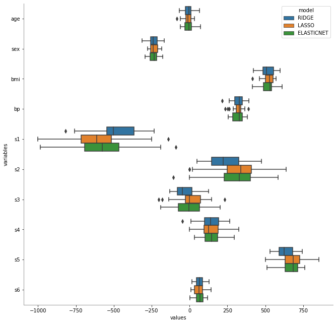

Técnicas Lasso y Elastic-Net — 5:42 min
5:42 min | Ultima modificación: Octubre 17, 2021 | YouTube
Regresión Lasso
Esta metodologías tiende a preferir soluciones con pocos coeficientes diferentes de cero, por lo que reduce la cantidad de caracterisitcas sobre las cuales la solución es dependiente.
\[\frac{1}{2N} \sum_{i=1}^N (y_i - g(x_i))^2 + \alpha \sum_{p=1} |w_p|\]
Regresión Elastic-Net
Este modelo de regresión usa simultáneamente las normas \(l_1\) (Lasso) y \(l_2\) (Ridge), buscando modelos donde unos cuantos coeficientes son diferentes de cero (Lasso), pero conservando las propiedades de regularización del modelo Ridge. Cuando hay varias características correlacionadas, Lasso tiende a seleccionar una de ellas de forma aleatoria, mientras que elastic-net tiende a seleccionarlas todas.
\[\frac{1}{2N} \sum_{i=1}^N (y_i - g(x_i))^2 + \alpha \rho \sum_{p=1} |w_p| + \frac{\alpha (1-\rho)}{2} \sum_{p=1} w_p^2\]
Comparación
[1]:
import matplotlib.pyplot as plt
import numpy as np
import pandas as pd
import seaborn as sns
from sklearn.linear_model import (
ElasticNet,
ElasticNetCV,
Lasso,
LassoCV,
Ridge,
RidgeCV,
)
from sklearn.model_selection import RepeatedKFold, cross_validate
[2]:
#
# Carga de datos
#
diabetes = pd.read_csv(
"https://raw.githubusercontent.com/jdvelasq/datalabs/master/datasets/diabetes.csv"
)
feature_names = diabetes.columns[:-1]
n_features = len(feature_names)
diabetes.head()
[2]:
| age | sex | bmi | bp | s1 | s2 | s3 | s4 | s5 | s6 | Y | |
|---|---|---|---|---|---|---|---|---|---|---|---|
| 0 | 0.038076 | 0.050680 | 0.061696 | 0.021872 | -0.044223 | -0.034821 | -0.043401 | -0.002592 | 0.019908 | -0.017646 | 151.0 |
| 1 | -0.001882 | -0.044642 | -0.051474 | -0.026328 | -0.008449 | -0.019163 | 0.074412 | -0.039493 | -0.068330 | -0.092204 | 75.0 |
| 2 | 0.085299 | 0.050680 | 0.044451 | -0.005671 | -0.045599 | -0.034194 | -0.032356 | -0.002592 | 0.002864 | -0.025930 | 141.0 |
| 3 | -0.089063 | -0.044642 | -0.011595 | -0.036656 | 0.012191 | 0.024991 | -0.036038 | 0.034309 | 0.022692 | -0.009362 | 206.0 |
| 4 | 0.005383 | -0.044642 | -0.036385 | 0.021872 | 0.003935 | 0.015596 | 0.008142 | -0.002592 | -0.031991 | -0.046641 | 135.0 |
[3]:
#
# Patrones de entrenamiento
#
y = diabetes.pop("Y")
X = diabetes.values
[4]:
#
# Coeficientes de un modelo de regresión lineal
# computados sobre distintos subconjuntos de
# datos
#
ridgeCV = RidgeCV(alphas=np.logspace(-6, 6, 100))
ridgeCV.fit(X, y)
ridgeCV.alpha_
[4]:
0.004328761281083062
[5]:
lassoCV = LassoCV(alphas=np.logspace(-6, 6, 100))
lassoCV.fit(X, y)
lassoCV.alpha_
[5]:
0.0032745491628777285
[6]:
elasticNetCV = ElasticNetCV(
alphas=np.logspace(-6, 6, 100), l1_ratio=1 - 0.9 * np.logspace(0, -3, 30)
)
elasticNetCV.fit(X, y)
display(
elasticNetCV.alpha_,
elasticNetCV.l1_ratio_,
)
0.0024770763559917113
0.9991
[7]:
repeatedKFold = RepeatedKFold(n_splits=5, n_repeats=5)
[8]:
ridge = Ridge(alpha=ridgeCV.alpha_)
cv_model_ridge = cross_validate(
ridge,
X,
y,
cv=repeatedKFold,
return_estimator=True,
)
coefs_ridge = pd.DataFrame(
[estimator.coef_ for estimator in cv_model_ridge["estimator"]],
columns=feature_names,
)
coefs_ridge["model"] = "RIDGE"
coefs_ridge.head()
[8]:
| age | sex | bmi | bp | s1 | s2 | s3 | s4 | s5 | s6 | model | |
|---|---|---|---|---|---|---|---|---|---|---|---|
| 0 | 24.928540 | -242.646394 | 455.392545 | 363.303034 | -486.051407 | 185.116550 | 22.533379 | 264.275379 | 615.233682 | 25.023913 | RIDGE |
| 1 | 16.163892 | -314.128181 | 477.409411 | 340.427086 | -231.856003 | 49.863305 | -131.690393 | 149.203000 | 547.425144 | 75.914868 | RIDGE |
| 2 | -54.504804 | -233.012530 | 596.993511 | 294.209495 | -658.768994 | 371.905841 | 7.857217 | 98.193046 | 712.928805 | 119.789791 | RIDGE |
| 3 | -21.616896 | -210.015222 | 500.145707 | 316.507762 | -545.679769 | 326.703589 | -46.442249 | 78.831991 | 682.727977 | 52.611570 | RIDGE |
| 4 | -1.647920 | -193.158699 | 561.811751 | 308.841652 | -521.572939 | 221.839895 | 1.630248 | 144.535774 | 622.912260 | 75.211032 | RIDGE |
[9]:
lasso = Lasso(alpha=lassoCV.alpha_)
cv_model_lasso = cross_validate(
lasso,
X,
y,
cv=repeatedKFold,
return_estimator=True,
)
coefs_lasso = pd.DataFrame(
[estimator.coef_ for estimator in cv_model_lasso["estimator"]],
columns=feature_names,
)
coefs_lasso["model"] = "LASSO"
coefs_lasso.head()
[9]:
| age | sex | bmi | bp | s1 | s2 | s3 | s4 | s5 | s6 | model | |
|---|---|---|---|---|---|---|---|---|---|---|---|
| 0 | 27.843174 | -252.735935 | 559.218852 | 325.665770 | -671.969666 | 395.803200 | -1.982561 | 42.403798 | 763.159888 | 22.925571 | LASSO |
| 1 | -12.689805 | -202.623593 | 501.929697 | 365.766047 | -552.203699 | 322.515205 | 5.289431 | 110.377867 | 719.465119 | 33.504007 | LASSO |
| 2 | -23.791882 | -231.590823 | 518.095519 | 350.722078 | -818.545677 | 473.560304 | 146.710402 | 303.662949 | 647.394289 | 120.248107 | LASSO |
| 3 | -37.216709 | -239.279399 | 556.056922 | 253.411652 | -580.340650 | 347.791182 | 8.223673 | 109.762884 | 699.224160 | 87.244429 | LASSO |
| 4 | -0.766497 | -246.416009 | 480.574220 | 311.490735 | -257.778267 | 0.000000 | -137.748028 | 157.318861 | 537.164094 | 76.220112 | LASSO |
[10]:
elasticNet = ElasticNet(alpha=elasticNetCV.alpha_, l1_ratio=elasticNetCV.l1_ratio_)
cv_model_elasticNet = cross_validate(
elasticNet,
X,
y,
cv=repeatedKFold,
return_estimator=True,
)
coefs_elasticNet = pd.DataFrame(
[estimator.coef_ for estimator in cv_model_elasticNet["estimator"]],
columns=feature_names,
)
coefs_elasticNet["model"] = "ELASTICNET"
coefs_elasticNet.head()
[10]:
| age | sex | bmi | bp | s1 | s2 | s3 | s4 | s5 | s6 | model | |
|---|---|---|---|---|---|---|---|---|---|---|---|
| 0 | 14.762858 | -260.754859 | 542.959669 | 323.629094 | -825.425274 | 460.625006 | 118.041856 | 186.994180 | 714.454860 | 87.239335 | ELASTICNET |
| 1 | -30.880380 | -293.822228 | 413.517197 | 357.422242 | -432.586012 | 331.659011 | -110.644481 | 72.750746 | 709.195879 | 66.705927 | ELASTICNET |
| 2 | 11.916888 | -205.227345 | 542.964237 | 355.406385 | -680.181074 | 339.103003 | 64.507229 | 139.081282 | 663.388366 | 45.709020 | ELASTICNET |
| 3 | -19.677778 | -177.746271 | 533.540177 | 276.878048 | -639.811844 | 355.203690 | 47.989532 | 206.004796 | 695.337629 | 18.285635 | ELASTICNET |
| 4 | -11.586814 | -250.916561 | 556.604284 | 298.517946 | -89.167103 | -108.299374 | -191.382147 | 103.087251 | 513.048187 | 117.959113 | ELASTICNET |
[12]:
#
# Comparación
#
coefs = pd.concat(
[coefs_ridge, coefs_lasso, coefs_elasticNet],
ignore_index=True,
)
coefs = pd.melt(
coefs,
id_vars="model",
var_name="variables",
value_name="values",
)
plt.figure(figsize=(11, 11))
sns.boxplot(x="values", y="variables", data=coefs, hue="model")
plt.gca().spines["left"].set_color("gray")
plt.gca().spines["bottom"].set_color("gray")
plt.gca().spines["top"].set_visible(False)
plt.gca().spines["right"].set_visible(False)
plt.show()
